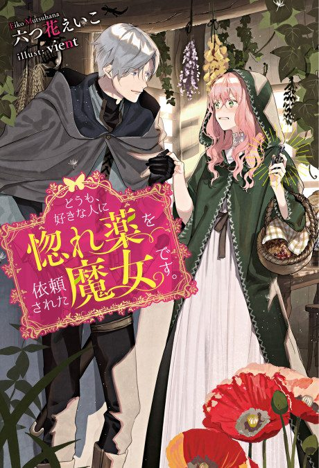

Hello, I am a Witch and my Crush Wants me to Make a Love Potion!
どうも、好きな人に惚れ薬を依頼された魔女です。
Rose, a witch, secretly loves a knight, and is crushed when he asks her to make a love potion for someone else.
We haven't found where the anime ends in the light novel yet.
7.1AniList score
—Animeter, no votes yet
12episodes, season 1
Rate it or report where you stopped
Anime finished. Where does the story go next?
StatusNo source yet
We looked for where the anime ends in the light novel but found no source we trust yet. The light novel is 21 chapters, finished.